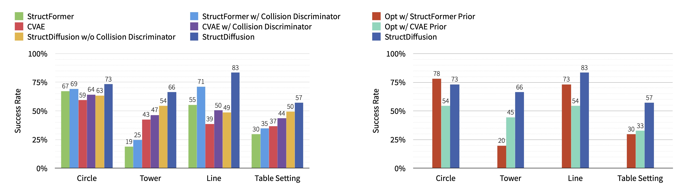
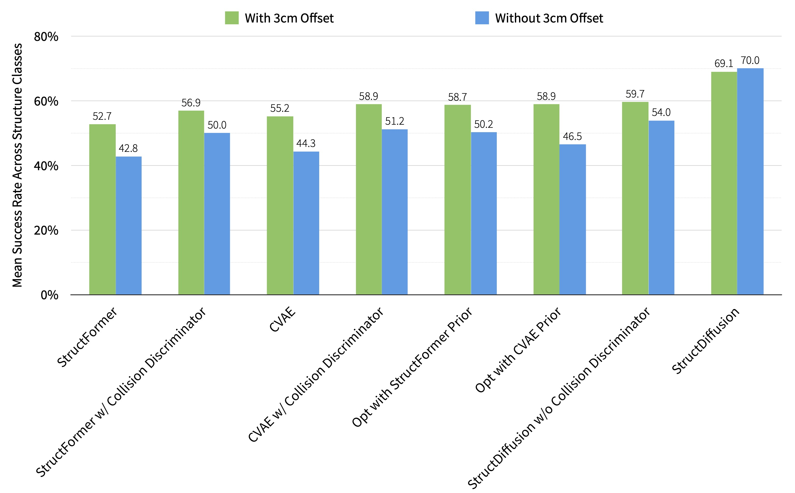

Dropping objects from 3cm above helps improve real-world success rates;
it’s an arbitrary choice to help avoid motion planning problems that are out of scope.
We did experiments with the actual predicted poses, and saw that StructDiffusion still achieves the best
performance with a 70.0% success rate (vs. 54.0% for the next best). We will add more analysis to the final paper.

Supplementary Fig. 1: Comparing StructDiffusion with baseline methods.
This figure reproduces the simulation experiments presented in the paper (i.e., Fig. 5 and Fig. 6) but uses the actual predicted poses without the 3cm offset.

Supplementary Fig. 2: Comparing the performance of models averaged over different structure classes, with and without the 3cm offset.
The performance of baseline methods decreases after removing the offset, but our method maintains a high success rate.